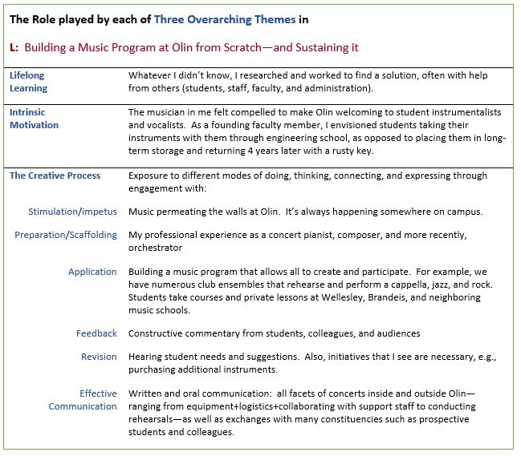

With help from many inside and outside Olin, I built the Music Program at Olin from scratch. It includes an engineers’ conductorless orchestra, a new concert series (the Ann Schaffner Concert Series), new instruments (since 2013, a Steinway B concert piano, Yamaha B3 48” upright, Chickering grand, bass flute, alto flute, pitched and non-pitched percussion), myriad student performances, plus a Babson-Olin-Wellesley (BOW) Presidential Innovation Grant that supported two “Mix and Stir” concerts at Olin. The first featured two world premières by BOW faculty and the second focused on student compositions. In all, I've rehearsed and produced 323 concerts including the Wired Ensemble, Olin Conductorless Orchestra, and other musical groups, performing as a pianist in 77 of them, most recently in 2023 https://www.youtube.com/watch?v=9icbmaUdWTA&list=PLvexLOJGQ74v0aFpdDdshzQHL2JAbwPXj&index=1.
A website Music@Olin can be found at https://music.olin.edu .
A colorful history of the program from 2001 – 2024 starts with Years 1-9, entitled “A Recipe for Making Music (or how to bake a music program from scratch)”, found in this document. The next 15 years are captured in a more narrative style: “What happened next: stories ‘behind the scenes’ (Developing Wired Ensemble, OCO, resurrecting music after covid)”, depicted in this document.
Music is a vital tradition at Olin, reminding us of the multiple intelligences our students bring to the community and beyond. Every year, Olin student club groups such as PowerChords, Olin Jazz Orchestra, and the Olin Rock Orchestra, as well as course groups such as the Wired Ensemble, Olin Conductorless Orchestra, and students in the AHS Capstone perform myriad concerts. A complete listing of concerts arising from my courses and other work can be found in Concerts at Olin (Fall 2002 – Spring 2019).
Building the Music Program at Olin from inception to the present time required all musical parts of me: composer, arranger, concert pianist, theorist, performer, and writer. What I didn’t know, I learned on the job or I taught myself. It’s been an amazing journey, exciting and creative. There’s also been a lot of behind the scenes work to ensure its sustainability. There are many, many people to thank—something I enjoy doing on the last page of every program. So here are those names from programs during 2018-19.
William Baez (Facilities personnel), Ellen Bailey (Business Manager, Administrative Services and Innovation), Holly Bennett (Senior Admin. Asst. for Academic Affairs), Alanna Boyd (Director of Development), Susan Brisson (Director of Admission), Krystal Burgos (Asst. Dir. for Admission Systems & Operations), Rae-Anne Butera (Dean of Students Affairs), Jose Mendoza (Facilities personnel), Linda Canavan (Associate Dean for Academic Programs, and Registrar), Neiza Correia (Facilities personnel), Paul Coveney (Admin. Asst. for Academic Affairs), Anne-Marie Dorning (Associate V.P. for Marketing and Communication), Noel Espinal (Facilities Asst. Director), Francisco Fernandez (Facilities personnel),
Jacqueline Fernandez (Facilities personnel), Marcella Fornagiel (Admin. Asst. for Academic Affairs), Alia Georges (Asst. Director of Admission and Financial Aid Counselor), Jeremy Goodman (V.P. for Administrative Services and Innovation), Alyson Goodrow (Director of Marketing), Steve Hannabury (Executive V.P. Emeritus), Stephanie Hill (Asst. to Dean of Admission and Financial Aid and Campus Visit Coordinator), Joe Hunter (Remember Productions), Beth Kramer (V.P. for Advancement), Barbara Luciano (Admin. Asst. for Academic Affairs), Vin Manno (Provost), Katherine McDonough (Asst. to the Provost and Dean of the Faculty), Robinson Medrano (Facilities personnel), Susan Mihailidis (Director of Academic Affairs and Sponsored Programs), Rick Miller (President), Shannon Paleologos (Director of Annual Giving and Family and Alumni Relations), Emily Petersell (Asst. Director of Admission), Kathleen Rollauer (Director of Advancement Services), Emily Roper-Doten (Dean of Admission and Financial Aid), Mark Somerville (Dean of Faculty), John Sullivan (Program Director, Needham Lions Club), Nancy Sullivan (Asst. to the President), Ashlee Talbot (Program Coordinator, Student Affairs and Resources), Paul McAuley (Facilities Director), Music Program Assistants Joseph Lee '19, Brandon Zhang '21, and Luis Zuniga '21.
We gratefully acknowledge the following people who donated funds in support of OCO’s ASEE concert in Niagara Falls, NY: Jane F. Tor, Li Fan, Susan Johanson, Brian Tor, Charles Nolan, Christopher Lee, Evan Dorsky, Daniel Rosner, Rongnong Zhou, Carol Reilly, Nancy and John Sullivan, Vincent Manno, Susan Goldstein, Linda Vanasupa, Justin P. Emmi, Janet Tsai, Molly Crowther, Rose E. Higgins, Anne Ku, Colin Takeda, Vaishali Sudhakar, Meg Lidrbauch, Charlotte Lidrbauch, Wen Fan, Gopal Borde, Suzanne Alcott, and Anonymous (3).
Finally, four short YouTube videos happened to be caught on camera during Music Program Concerts. They help convey the impact and scope of the program. Their links can be found in Supplementary Materials IV-L-3.
In sum, the Music Program at Olin speaks to our goals of Developing Students, producing External Impact, and Building & Sustaining the College (Map 1). I’m grateful for the many people who helped, without whom we wouldn’t have a Music Program! Yet I’m also aware that the buck stops here, and somehow the show must go on. Building and sustaining the program required a complete musician who could guide it for the benefit of the students and the Olin community. In bringing my skills to the table, I stepped in as composer, pianist, theorist, collaborator, and cheerleader, as needed. It required an openness to ideas, as well as a high comfort level with trust and distributed authority, all of which resulted in a cornucopia of groups and music-making on campus, especially before covid. In short, I followed a “meaning-making” process of leadership, as described in "Making Common Sense: Leadership As Meaning-Making in a Community of Practice" [W. Drath & C. Palus, 1994], i.e., doing whatever it takes to help the ensemble reach its goals and maintain standards. The impact of the program on Olin students starts as external impact, since they first hear its results as prospective students; the orchestra attracts students and thus impacts the long-term sustainability of the College, especially with respect to the caliber of the student body. Olin’s engineer-musicians are consistently among its best students.
This project occupies the music space, yet it also lies in the engineering space because it has given our engineer-musicians opportunities and venues for making music (Map 2). The table below captures the role played by each of my three overarching themes in building & sustaining the Music Program, thus speaking to Map 3.
